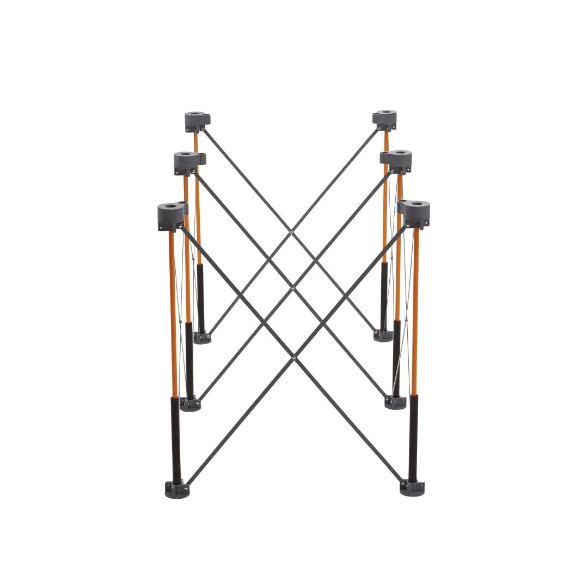
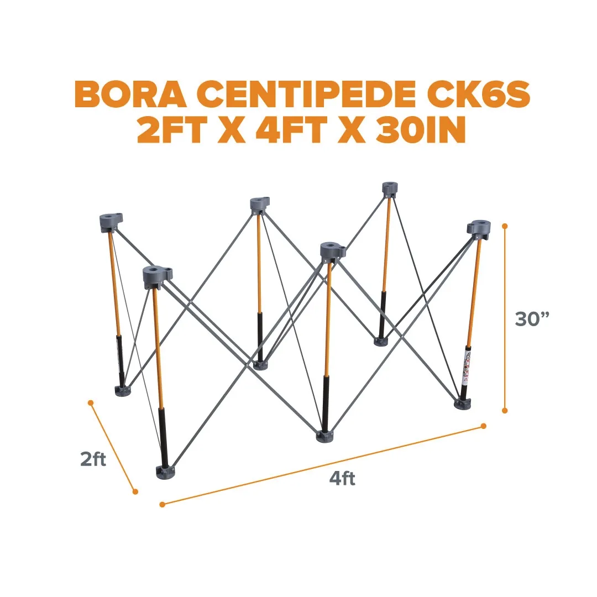
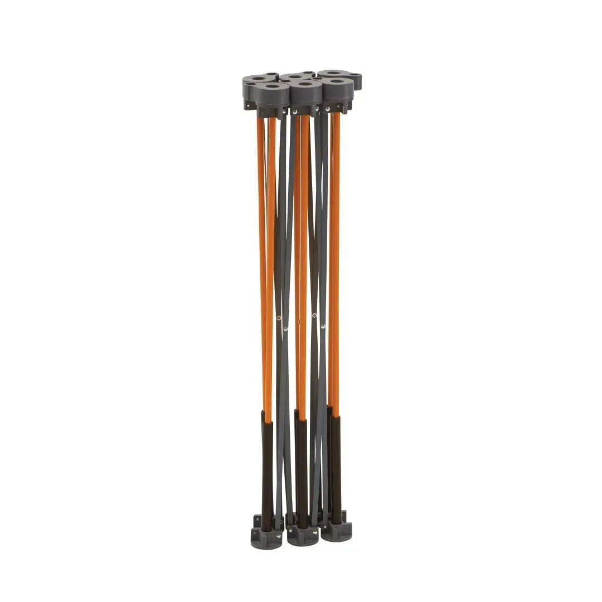
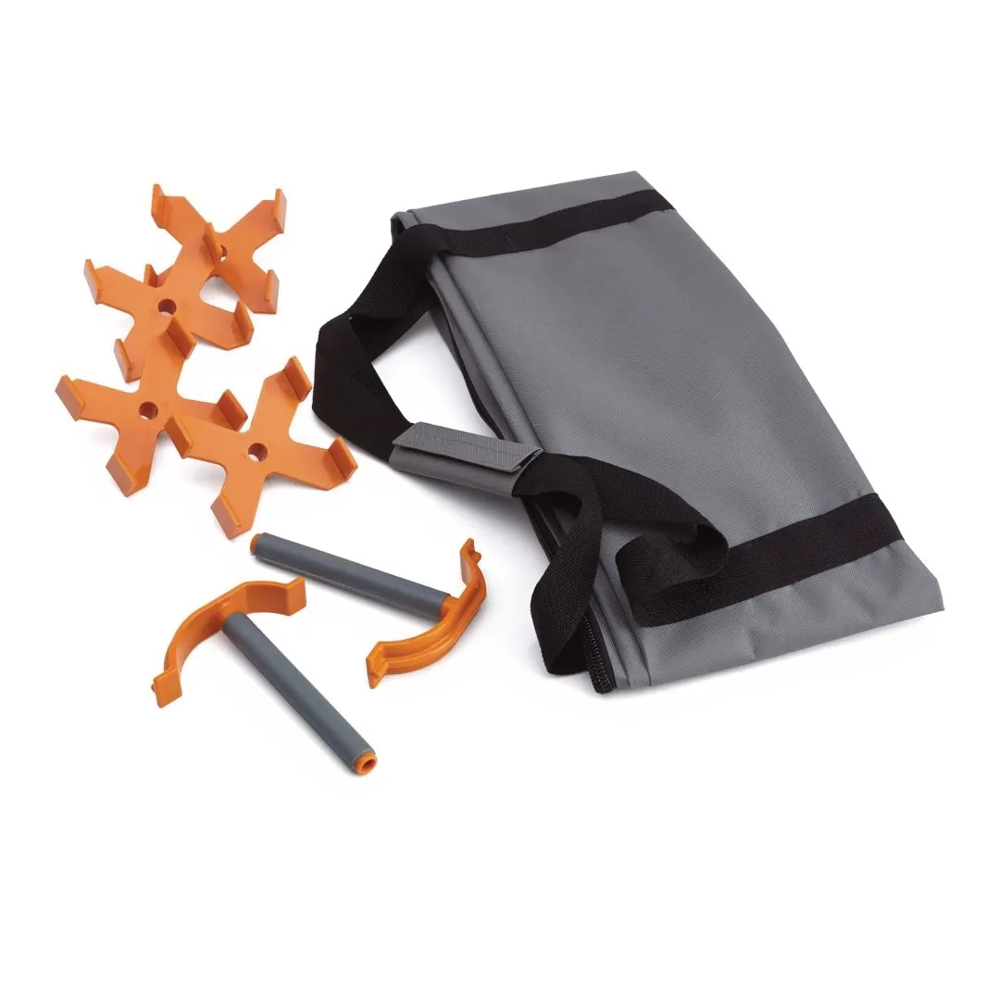
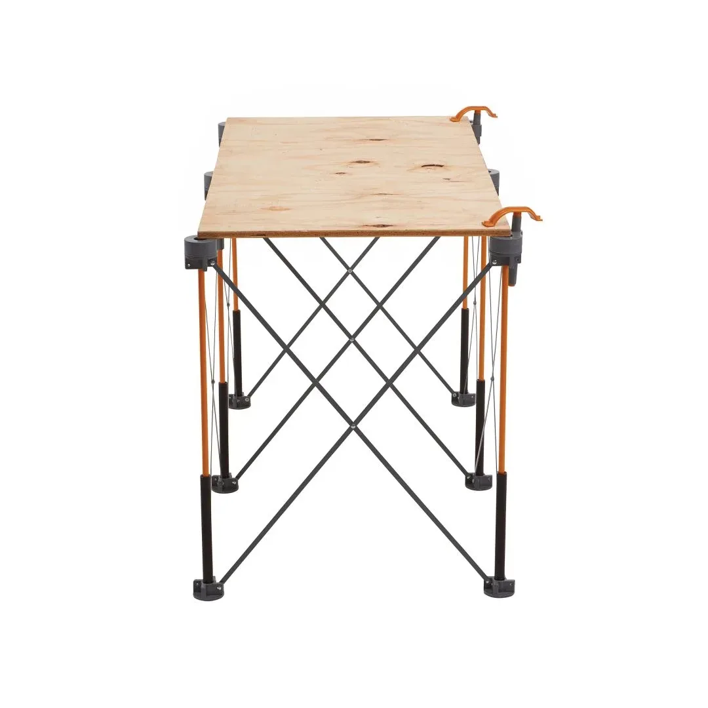
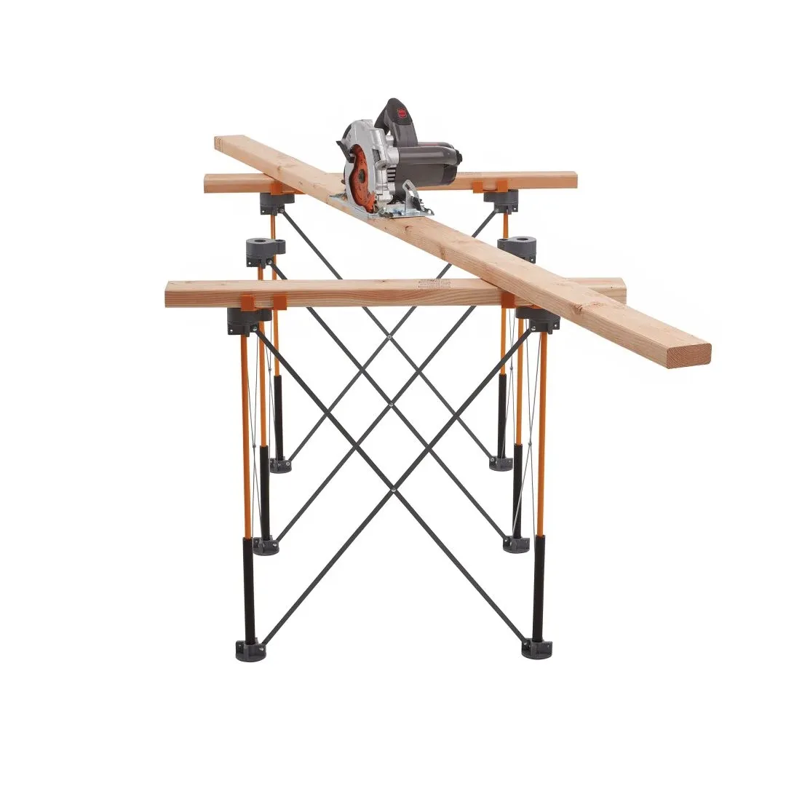
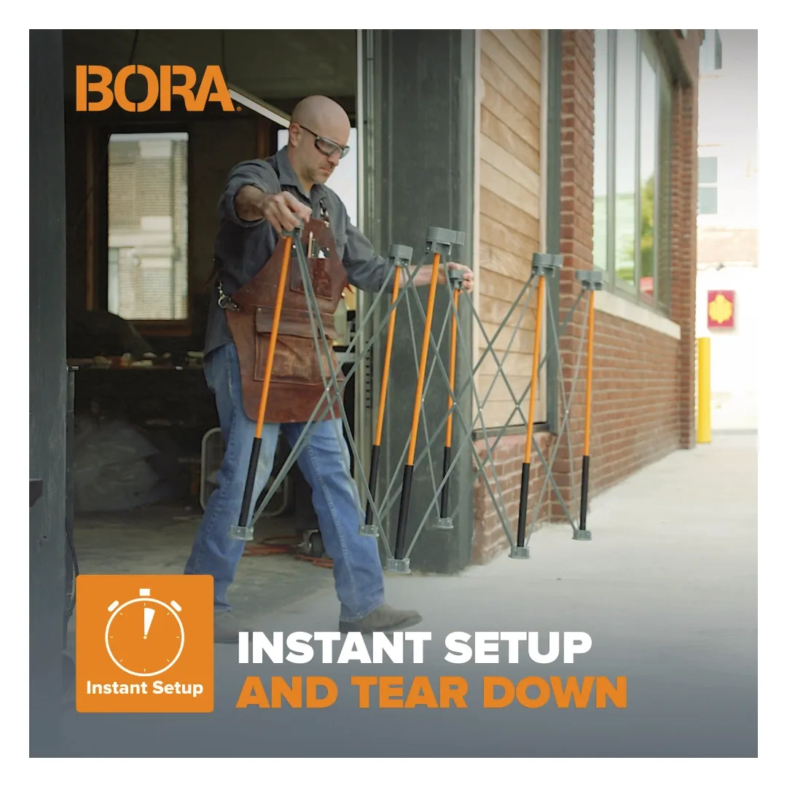

022CK6S







The BORA Centipede CK6S Workstand provides a fast and portable solution for setting up a stable work area. It expands in seconds to create a compact workstation, offering strong support for a wide range of tasks on site or in the workshop.
Key Features
The workstand is designed for convenience and flexibility. It can be used with a variety of work surfaces such as plywood or MDF, making it suitable for cutting, assembly, and general tasks. When not in use, it folds down for compact storage and transport.
| Working size: | 610mm x 1220mm |
| Working height: | 762 mm |
| Load capacity: | 1134 kg |
| Folded size: | 152mm x 229mm x 965mm |
| Material: | Steel frame with polymer P-Tops |